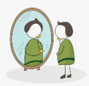

1. AutoconocimientoConsiste en aprender a identificar nuestras habilidades, fortalezas y áreas de oportunidad. Conocer nuestra propia identidad nos da la seguridad necesaria para valorarnos de forma positiva y enfrentar los desafíos diarios sin depender de la aprobación de los demás.  |
2. AceptaciónSignifica querer y respetar nuestro cuerpo, nuestra historia y nuestra forma de ser de manera incondicional. Nos enseña a ver los errores como valiosas oportunidades de aprendizaje en lugar de motivos de castigo, reduciendo el miedo al juicio externo. |
3. AutocuidadoEs el compromiso diario de proteger nuestro bienestar físico, mental y emocional. Implica mantener hábitos saludables, asegurar un buen descanso y aprender a poner límites firmes frente a conductas perjudiciales de otras personas. |